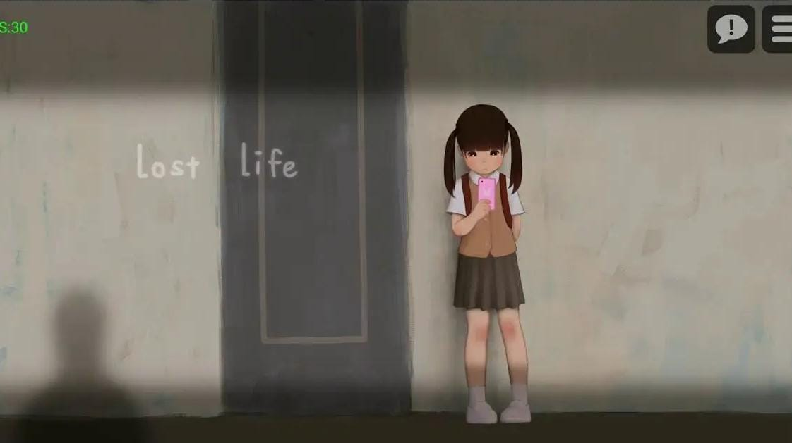

CULTURA DE ESTUPRO E VIOLÊNCIA SEXUAL
O infográfico apresenta dados alarmantes sobre a violência sexual no Brasil, evidenciando como a cultura do estupro está enraizada socialmente.
Dados Reais sobre Abuso Sexual Infantil no Brasil (2022)
Fonte: Anuário Brasileiro de Segurança Pública 2023 / TRT-MG
Jogo: Lost life

"NO MERCY" E A BANALIZAÇÃO DA VIOLÊNCIA
Fonte: Postagem no aplicativo TikTok, perfil “no mercy”
Evolução do número de vítimas de estupros e estupros de vulnerável
Fonte: Anuário Brasileiro de Segurança Pública (2024)
VÍTIMAS DE ESTUPRO POR RAÇA/COR NO BRASIL, 2023
Fonte: Anuário Brasileiro de Segurança Pública (2024)
VÍTIMAS DE ESTUPRO POR SEXO NO BRASIL, 2023
Fonte: Anuário Brasileiro de Segurança Pública (2024)
DISTRIBUIÇÃO DAS OCORRÊNCIAS DE ESTUPRO E ESTUPRO DE VULNERÁVEL NO BRASIL, 2023
Fonte: Anuário Brasileiro de Segurança Pública (2024)
Fonte: Anuário Brasileiro de Segurança Pública (2024)
Fonte: Anuário Brasileiro de Segurança Pública (2024)
Fonte: Anuário Brasileiro de Segurança Pública (2024)